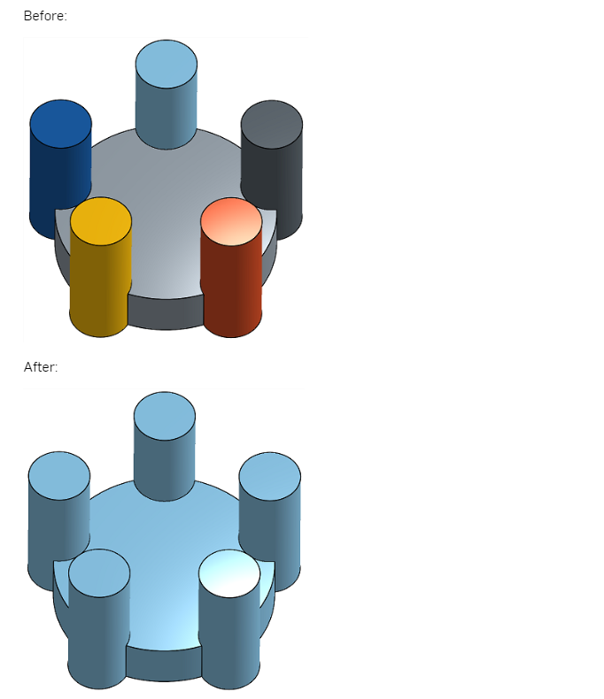
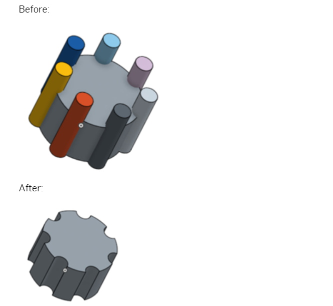
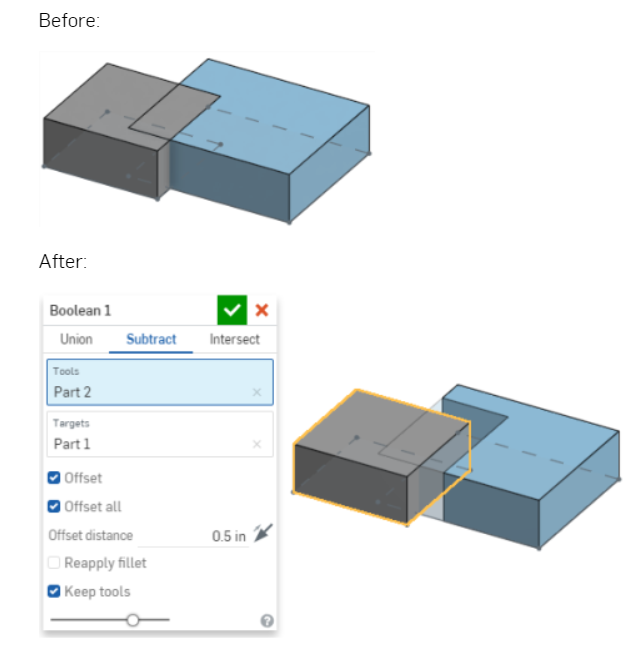
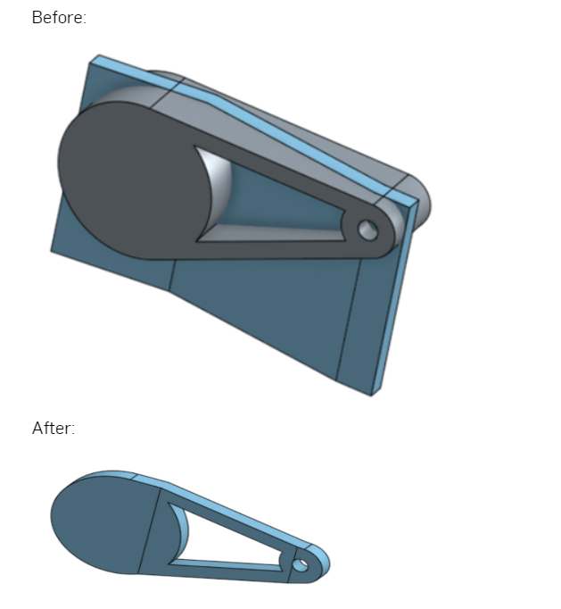
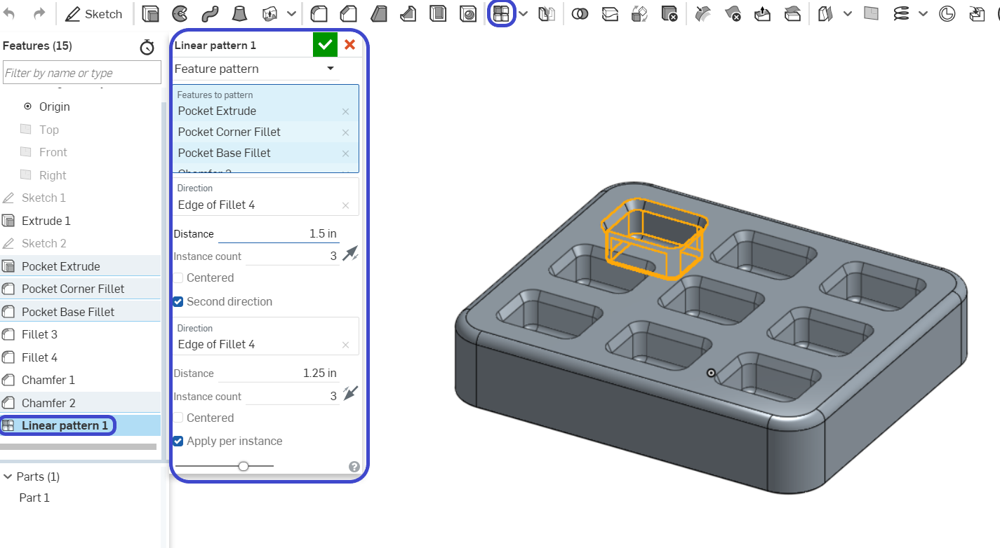
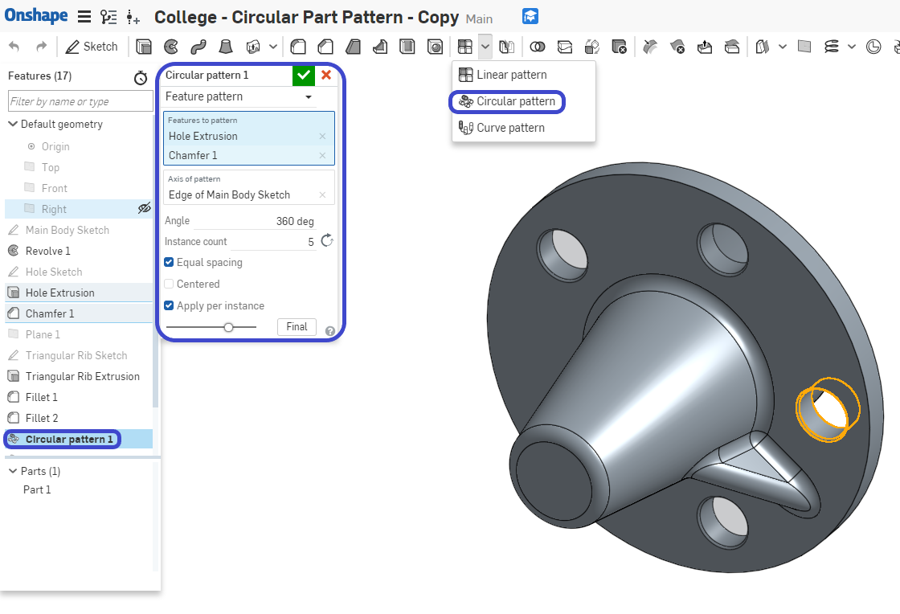
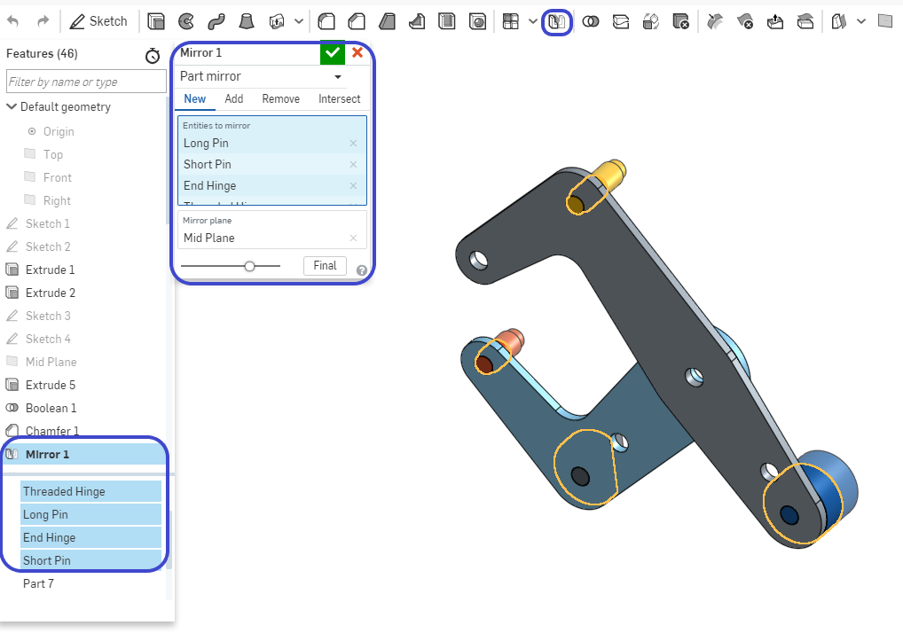

1. What are the 3 types of Boolean Operations and how do they work?(三種類型的布林運 算有哪些，它們如何工作?) Feel free to draw pictures if they help.
a. Add/Union ( 聯集 )- A single Part is created from multiple, overlapping “Tools”( 合併零件 )
b. Subtract ( 差集 ) - “Tools” are used to remove material from “Targets”. ( 移除零件，並在零件之間應用偏移 )
c. Intersect (相交 )- The overlapped volumes are created by multiple, overlapping “Tools” (用於合併零件的布林值，僅在重疊幾何存在的位置保留材料)
2. What is the main difference between a Linear and a Circular Part pattern? ( 矩形陣列及環形陣列的主要區別是什麼? )
A Linear pattern creates parts along a straight linear reference, a circular pattern creates
parts around an axis reference.( 矩形陣列沿直線參考創建零件，環形陣列圍繞軸參考創建零件 )
3. When might you use a Part Pattern versus a Feature Pattern? ( 何時可以使用零件圖案與特徵圖案? )
A Part Pattern patterns an individual part while a Feature Pattern patterns a specific
feature (or features) listed in the Feature Tree, such as extrude, fillet, sweep, and sketch.( 零件圖案對單個零件進行圖案化，而特徵圖案對特徵樹中列出的特定特徵（或多個特徵）進行圖案化，例如拉伸、圓角、掃掠和草圖 ) .
4. Describe in your own words what “Top-Down Design” means.( 描述 “ 由上而下設計 ” 的含義 )
Top-Down Design is when the shape of an overall product is sketched first, and then
different regions of that sketch are used to create the lower level parts and their features. ( 由上而下設計是指首先繪製整個產品的形狀，然後使用該草圖的不同區域來創建較低級別的部件及其特徵 )
5. Why is it smart to put fillets and chamfers at the end of the feature list? ( 為什麼在特徵列表的末尾放置圓角和倒角是明智的? )
Because they are not critical features, and having them too early in the model, could
result in accidentally referencing them while creating critical geometry.因為它們不是關鍵功能，並且在模型中使用它們太早，所以可能導致在創建關鍵幾何體時意外引用它們 )
6. How is the mirror tool being utilized in the creation of our Clamp design?( 如何在創建鉗子設計時使用鏡射工具 )
We are using it to save time by only modeling half of our pins and hinges, and then
mirroring them over the symmetry plane.( 僅對一半得零件進行建模，在使用對稱平面來鏡射它們而達到省時 ) .